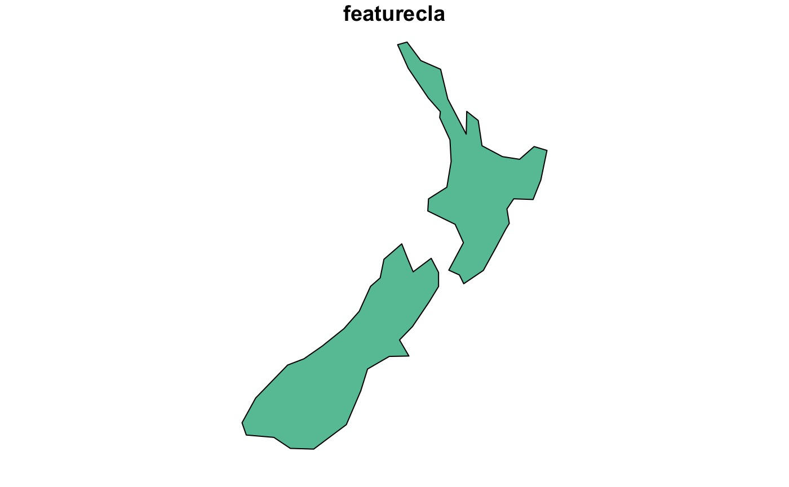
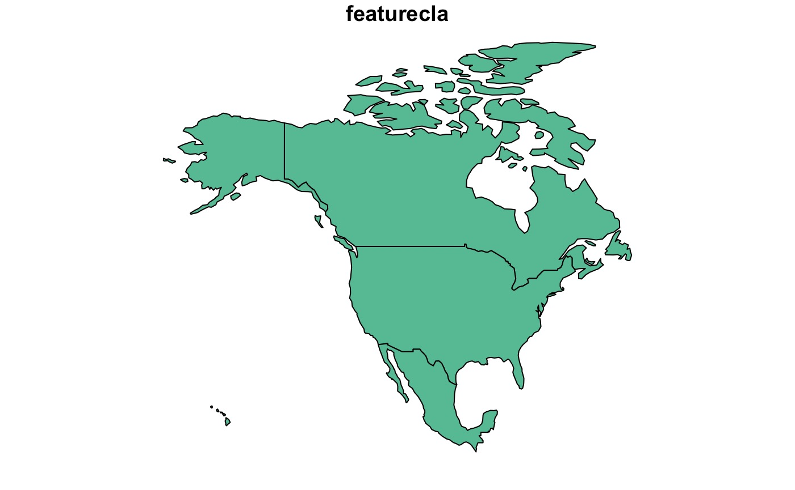
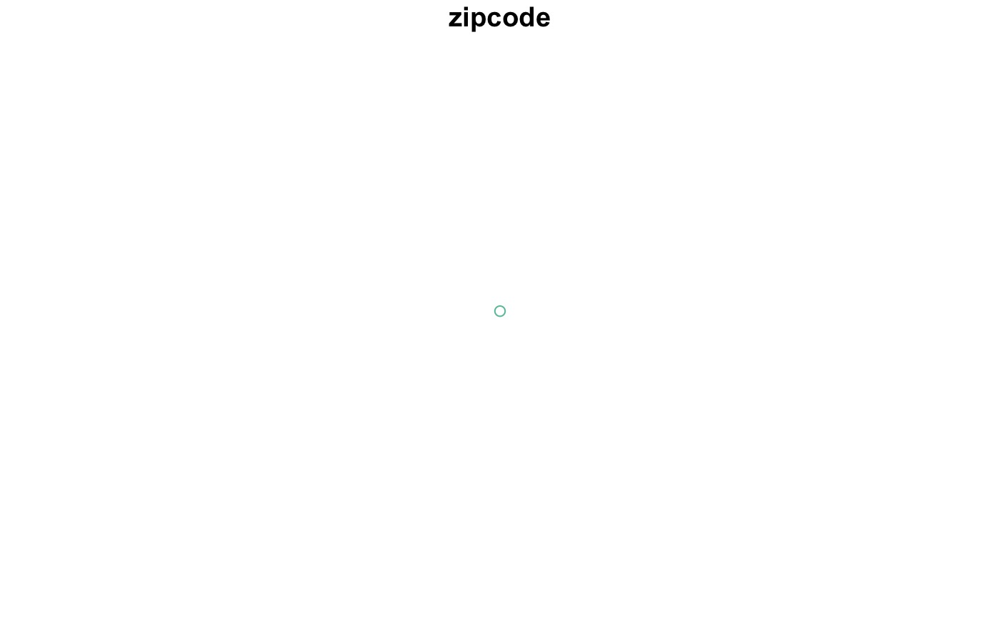

library(AOI)
library(mapview)
library(dplyr)
#>
#> Attaching package: 'dplyr'
#> The following objects are masked from 'package:stats':
#>
#> filter, lag
#> The following objects are masked from 'package:base':
#>
#> intersect, setdiff, setequal, unionAOI aims to provide a consistent, and flexible, syntax for retrieving
fiat boundaries for spatial analysis, map making, and data retrivial.
This is all done in the aoi_get function:
Definition: fiat: fiatness implies mind-dependence, and thus a fiat boundary is a boundary that is determined by human fiat, lacking any natural indication.
This package makes no claims on sovereignty and returns data as found in Natural Earth, or, produced by the US Census Department (in the US).
Countries
To retrive country boundaries (1 or more), ISO codes, abbreviations and names can be used:


Zipcode
aoi_get(zipcode = "80906") |>
plot(max.plot = 1)
#> [1] "80906"
#> zipcode lat lon
#> 28229 80906 38.76568 -104.8716